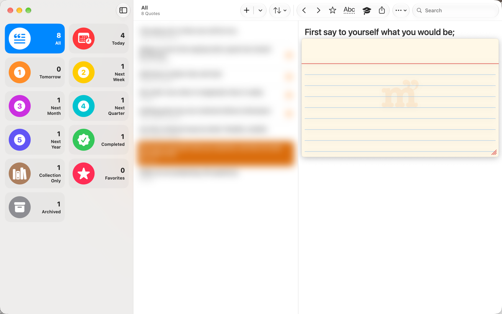
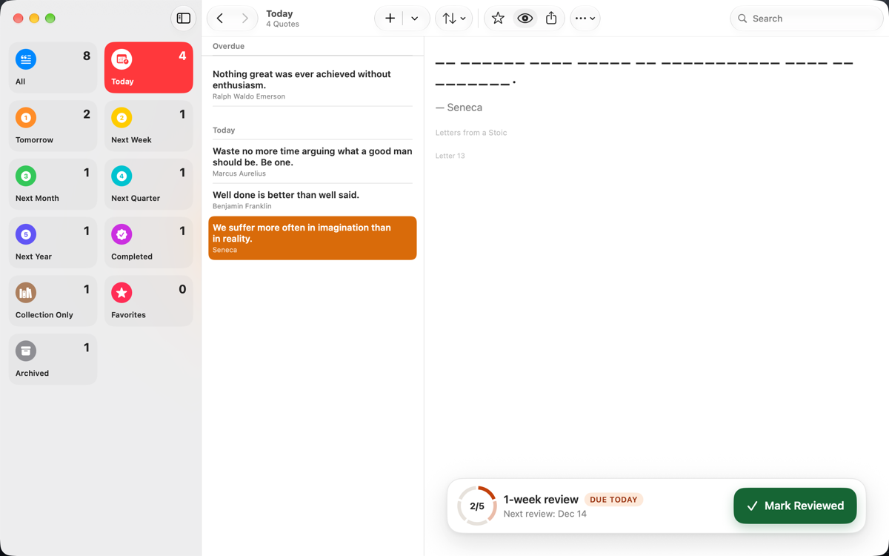
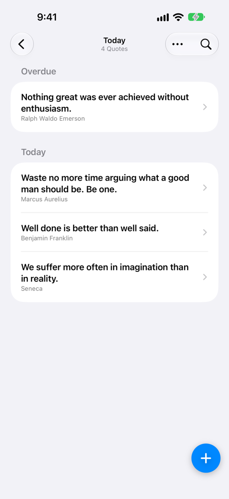
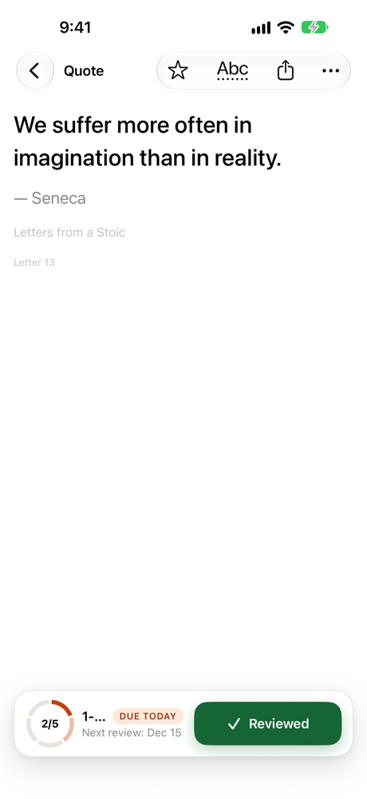
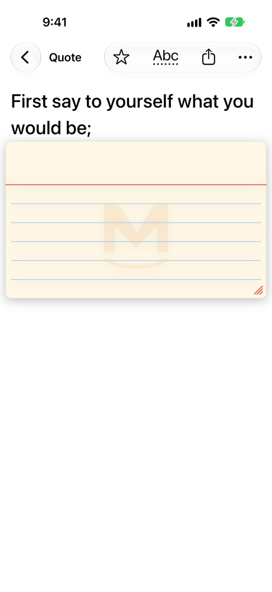
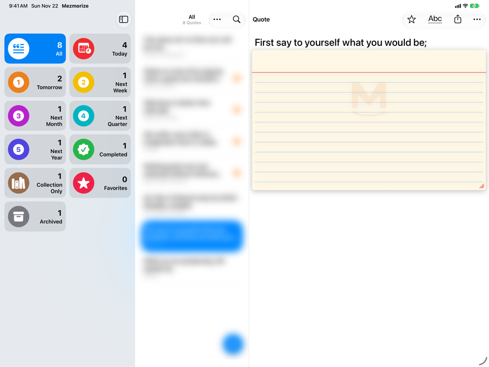
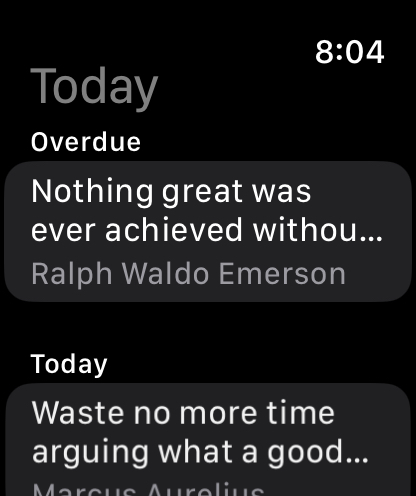

Mezmorize
A native app for Mac, iPhone, and iPad, with an Apple Watch companion, that helps you remember quotable quotes using the Three-minute Memory Method.

The method
The Three-minute Memory Method is a short, spaced-review technique: review something five times over a year, and the total time is said to be only about three minutes. Mezmorize applies it to your personal collection of quotes.
Each quote has text and an author; a source is optional. Leave Applies Memory Method on and the quote is reviewed five times:
- Tomorrow
- Next week
- Next month
- Next quarter
- Next year
Turn the toggle off for quotes you already know. They stay in your collection but never appear in Today’s Review.
Features
- Today’s Review: quotes due today, and any overdue, appear automatically. Missed reviews are never skipped.
- Review bar: an open quote shows a progress ring, the review name, a Due Today or Overdue badge, and the next review date.
- Mark Reviewed: read the quote, tap once, and the next review is scheduled. Mezmorize then moves on to the next quote that is due.
- Reveal: show the quote in full, as first letters only, or hidden, as a self-test. Display only.
- Study Mode: once a quote is not due (after today’s review, or always when the method is off), a graduation cap button starts Study Mode. The quote is laid out one phrase per row, and a virtual 3×5 index card covers it. Touch (click on a Mac) anywhere to move the card over the rows, and drag its corner grip to resize it. Touch and hold to end Study Mode (press Esc on a Mac). Nothing is saved, and it never changes the schedule.
- Previous and next: step through the quotes in a list with the ‹ › buttons or ⌘[ and ⌘] on a Mac, or swipe left and right on iPhone and iPad.
- Tiles: a colorful sidebar groups your quotes: All, Today, one tile for each review, Completed, Collection Only, Favorites, and Archived.
- Search and sort: find quotes by text or author within a tile, and order the list by quote, author, date created, or next review.
- Archive first: archiving removes a quote from your list without losing its progress, and you can unarchive it. Permanent delete is available only from Archived, and it always asks first.
- Favorites: tap the star in a quote’s detail, on Mac, iPhone, iPad, and Apple Watch, to mark it a favorite. Starred quotes appear in the Favorites tile, with a count. Favoriting is only a label: it never changes a quote’s review stage or dates. Favorites are not included in exported .mezmorize files.
- Share Quote: send a quote as plain text through the system share sheet.
- Import Quote from URL: fill the new quote form from a web page, then review and save. Nothing is saved until you save. You can also share a link to Mezmorize from Safari or Gospel Library.
- Export and import: share a set of quotes as a small .mezmorize file by AirDrop, Messages, Mail, or Files. A preview lets you pick which quotes to add. Review progress is not included.
- Quote Display: in Settings, choose a serif or sans-serif font and make quote text smaller or larger.
- Daily reminders: an optional notification at a time you choose, only on days with quotes due. It shows how many are due and, if you like, a quote preview. The app icon badge shows the due count, and tapping a reminder opens Today’s Review.
- Widgets: see how many quotes are due, or one due quote, on your Home Screen or Mac desktop. Tap to open it. Widgets only display.
- Celebrations: a tiny surprise if you want one. Pick an effect in Settings to play it when you Mark Reviewed. Off by default.
Platforms
- Mac, iPhone, and iPad: the full app.
- Apple Watch: a review-only companion that installs alongside the iPhone app. See Today’s list, swipe up or turn the Digital Crown for Favorites, open a quote, tap Mark Reviewed when it is due, and tap the quote to cycle Full, First Letters, and Hidden. Adding, editing, searching, and Settings stay on Mac, iPhone, and iPad.
Screenshots
Mac





iPhone




iPad




Apple Watch

Learn more
Want to try it early? Join the beta on TestFlight. Need help? See Support. Curious about data? Read the Privacy page.